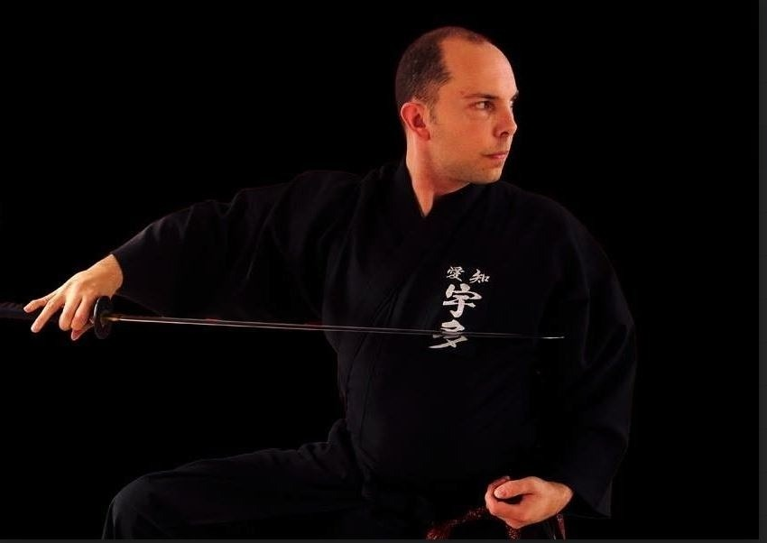
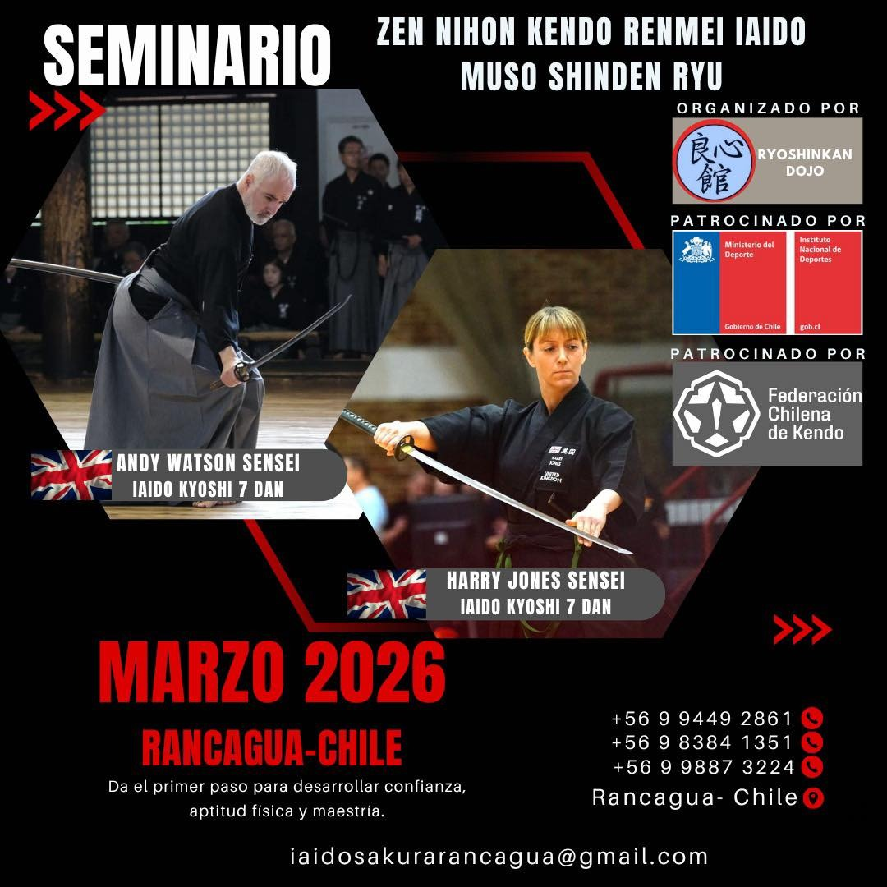

-
Primeiro brasileiro a alcançar o 7º Dan em Iaido

02/03/2025
No dia 02 de março de 2025, em Quioto, o Sensei Alexandre Pereira, Muso Jikiden Eishin Ryu, é o brasileiro com a maior graduação (Renshi 7º Dan) pela Federação Japonesa de Kendo (Zen Nihon Kendo Renmei - ZNKR). Um marco significativo para as artes marciais e o Iaido no Brasil. A conquista, que exige anos de dedicação, habilidade e conhecimento profundo, consolida a posição do Sensei Alexandre como um respeitado expoente da modalidade, sendo o primeiro brasileiro a alcançar esse patamar. O feito foi celebrado por seus alunos e colegas.
-
Seminário Internacional de ZNKR Iai e Muso Shinden Ryu e Primeiro Campeonato de Iaido Koryu - Rancagua, Chile

23/01/2026
Em março de 2026 a cidade de Rancagua, no Chile, sediará o Seminário Internacional de ZNKR Iai e Muso Shinden Ryu, além de realizar o primeiro campeonato de Koryu do Chile. O evento conta com a orientação de Andy Watson Sensei (Kyoshi 7° Dan Iaido, Kyoshi 7° Dan Jodo) e Harry Jones Sensei (Kyoshi 7° Dan Iaido, Kyoshi 7° Dan Jodo). Data: 13 / 14 / 15 de março de 26Local: Rancagua, Chile.
Maiores informações -
2º Campeonato Open São Paulo de Iaido e Jodo 21/02/2026 e 22/02/2026

01/03/2026
Nos dias 21 e 22 de fevereiro, A Federação Paulista de Kendo (FPK), em parceria com o SESC, promoveu o 2º Open São Paulo de Iaido e Jodo no SESC Consolação, localizado no centro de São Paulo. O evento contou com a participação de mais de 40 inscritos, incluindo competidores do Chile e Reino Unido. Além disso, foram ministrados seminários pelos instrutores chilenos Nicholas Diaz, Renshi 6º Dan de Iaido, e Julio Villarroel, 6º Dan de Jodo.